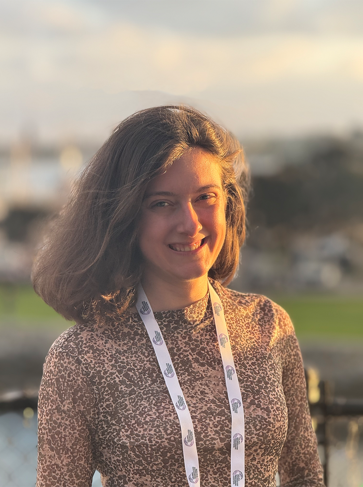

Miranda Christ, Miranda Anna Christ, AI researcher, machine learning, interpretability, scalable oversight, AI safety, UC Berkeley, Berkeley CS, NeurIPS, NeurIPS Spotlight, ICLR, world models, large language models, LLM interpretability, AI alignment, deep learning, computer science, neural networks, representation learning, Berkeley AI research, Miranda Christ Berkeley, Miranda Anna Christ Berkeley, Miranda Christ AI, Miranda Anna Christ AI, Miranda Christ researcher, Miranda Anna Christ researcher, Miranda Christ NeurIPS, Miranda Anna Christ NeurIPS, Miranda Christ machine learning, Miranda Anna Christ machine learning, Miranda Christ interpretability, Miranda Anna Christ interpretability, Miranda Christ AI safety, Miranda Anna Christ AI safety, Miranda Christ scalable oversight

Miranda Anna Christ
Hey! I'm Miranda, a first-year CS undergrad at UC Berkeley. These days, I work on scalable oversight as a SPAR fellow under Rishub Jain and on LLMs for cancer care at UCSF under Julian Hong. Before, I spent three years at the Rényi Institute in Budapest, where I did interpretability research and first-authored a NeurIPS Spotlight while still in high school.
cd research
cd newsawards, talks, etc.
cd miscpress, programs, etc.
Last updated Apr 2026
~/research
Under Review · 2026
Toward Human-AI Complementarity Across Diverse Tasks
Yuzheng Xu, Annya Dahmani, Matthew D. Blanchard, Niclas Dern, Edy Nastase, Francesca Bianco, Maja Pavlovic, Sukanya Krishna, Eric Modesitt, Miranda Anna Christ, Arth Singh, Gaia Molinaro, Sikata Bela Sengupta, Jaji Pamarthi, Arjun Menon, Rishub Jain
NeurIPS 2025 · Spotlight (Top 10%)
The Structure of Relation Decoding Linear Operators in Large Language Models
Miranda Anna Christ, Adrian Csiszarik, Gergely Becso, Daniel Varga
My first paper got accepted to the ICLR 2025 Robot Learning Workshop!
Sep 12, 2024
I won a silver medal at the Individual International AI Olympiad as the sole female medalist in Saudi!
Aug 15, 2024
I won a silver medal at the International AI Olympiad in Teams in Bulgaria!
~/misc
programs & service
2026
Jump Trading Early Access
A selective program, where Jump hosts first and second year undergraduates in their HQ in Chicago
2024, 2025
Eastern European Machine Learning Summer School
Life-changing, Google DeepMind-sponsored summer school. I first attended in 2024, where I met my collaborator with whom I co-authored my first paper. It was so influential that I went back next year and met other really special people to me.
2025
Mentor for Team Hungary, International AI Olympiad
I served as a Judge at the national selection contest for both individual and team competitions.